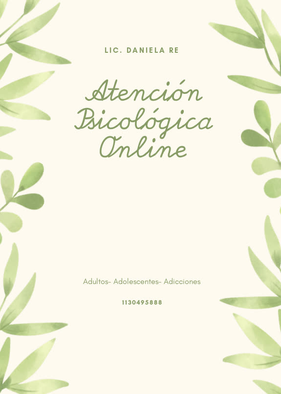

Online
Sesiones desde tu casa o donde estés, en los mismos días y horarios del consultorio.
Lic. Daniela RePsicóloga · Campana
Adultos · Adolescentes · Adicciones
Los botones de contacto se activan cuando arrancamos con la versión oficial.

Con quién trabajo
Un espacio para poner en palabras lo que te preocupa y entender qué te está pasando, a tu ritmo.
Podés elegir hacerlo online, desde donde estés, o en el consultorio de Campana.
Un lugar propio para hablar de lo que les pasa, con alguien de afuera de la casa y de la escuela.
La consulta la puede hacer el adolescente o alguien de su familia.
Pedir ayuda es el primer paso. La consulta es sin juicios y con total reserva.
También pueden escribir familiares o personas cercanas que no saben cómo acompañar.
Online y presencial
Sesiones desde tu casa o donde estés, en los mismos días y horarios del consultorio.
Consultorio en Viamonte 395, de lunes a jueves de 11 a 20 y los viernes de 11 a 18.
Salud mental en Campana: Daniela formó parte de la nota del Centro Médico Rawson por el Día Mundial de la Salud Mental, publicada en La Auténtica Defensa el 11/10/2020.
Cómo empezar
Un mensaje corto alcanza: contame brevemente qué te trae y si preferís online o presencial.
Buscamos un día y un horario, de lunes a viernes desde las 11.
Nos conocemos y vemos juntos cómo seguir.
Horarios y dirección
| Lunes | 11:00 a 20:00 |
|---|---|
| Martes | 11:00 a 20:00 |
| Miércoles | 11:00 a 20:00 |
| Jueves | 11:00 a 20:00 |
| Viernes | 11:00 a 18:00 |
| Sábado y domingo | Cerrado |
Online o en Campana, de lunes a viernes.
Los botones de contacto se activan cuando arrancamos con la versión oficial.